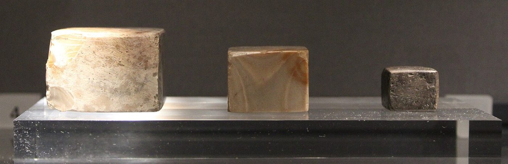

Chapter 7: Markets, Prices, Weights and Regulation¶
Chapter Overview
This chapter examines how markets were described and regulated in early and early medieval South Asia. It begins with the evidence for markets in Pali, Sanskrit and Tamil literature, in Greek accounts and in inscriptions. It then turns to the market officials of the Arthaśāstra: the superintendent of trade (paṇyādhyakṣa), the superintendent of markets (saṃsthādhyakṣa), the superintendent of weights and measures (pautavādhyakṣa) and the superintendent of customs (śulkādhyakṣa). It discusses price fixing and permitted profit margins, standard weights and measures, rules against fraud and adulteration, tolls and customs, measures against scarcity and famine, and the settlement of market disputes, and ends by placing Indian ideas of a regulated price in a comparative historical frame.
Markets appear in South Asian sources in two very different lights. In poetry, narrative and travellers’ accounts they are crowded, noisy places full of goods from distant lands. In the normative literature, above all the Arthaśāstra and the dharmaśāstras, they are objects of supervision: places where prices must be fixed, weights checked, goods taxed and cheats punished. Both pictures are partial. The poets idealise abundance; the treatises describe what a king’s officials ought to do, not what they did. Used together, and with the evidence of inscriptions and archaeology, they show a long tradition in which rulers claimed the right to regulate exchange and merchants and their associations largely governed it in practice. The Arthaśāstra itself, its date and its revenue system are introduced in Chapter 2.
7.1 Markets in the Sources¶
7.1.1 Vocabulary¶
Sanskrit and Pali have a rich vocabulary for places of exchange. An āpaṇa is a shop or stall; a vīthi a street, often a street of shops; paṇya means goods for sale, and the Arthaśāstra calls the market paṇyasaṃsthā, the place where goods are set out. The Pali texts speak of the antarāpaṇa, the market street or bazaar inside a town. A nigama (Pali nigama) is a market town and, in some contexts, a body of merchants: copper coins of early Taxila bear the legend negama, probably referring to such a body (Allan 1936). A paṭṭana is a port or trading town. In the inscriptions of the early medieval period two further terms become common: the haṭṭa, a market, often periodic, and the maṇḍapikā, a market centre where tolls were collected (Gopal 1965; Chattopadhyaya 1994). These words do not form a fixed hierarchy; their meanings shifted between regions and periods.
7.1.2 Pali, Sanskrit and Tamil Literature¶
The Pali canon and the Jātaka stories are full of merchants, caravan leaders and market scenes. The Bāveru Jātaka, for example, tells of merchants who took a crow and then a peacock to the land of Bāveru, usually identified with Babylon, and sold them there for high prices. Such stories are valuable for the social world they reflect, but they must be dated with care: the verses of the Jātakas are older than the prose stories, which reached their present form in the commentary of about the fifth century CE (Chakravarti 2002). The Sanskrit epics and later kāvya describe the markets of royal cities in conventional images of plenty, with shops of jewels, perfumes and cloth.
The most vivid early descriptions of markets come from Tamil poetry of the early centuries CE. The Maturaikkāñci, one of the long poems of the Pattuppāṭṭu anthology, describes Madurai with two markets, a day market (nāḷaṅkāṭi) and an evening or night market (allaṅkāṭi), crowded with traders and goods. The Paṭṭiṉappālai’s picture of the Chola port of Pūmpuhār, with its customs officers stamping goods with the tiger emblem, is described in Section 15.2.5. These are poems, not inventories, and their catalogues of goods serve the praise of a king; but they show markets and customs procedures that the poets expected their audiences to recognise.
7.1.3 Greek Accounts and Archaeology¶
Megasthenes, who visited the Maurya court around 300 BCE, described the administration of the capital, Pāṭaliputra, in a passage preserved in Strabo’s Geography (15.1.50–51). According to this account, the city officials were organised in six boards of five members. One board supervised the crafts, one looked after foreigners, one registered births and deaths, one had charge of trade and commerce, including measures and the sale of produce by public notice, one supervised the sale of manufactured goods, keeping new goods separate from old, and the sixth collected a tenth of the price of goods sold, fraud in this tax being punished with death (McCrindle 1877). Megasthenes’ work survives only in fragments quoted by later authors, and parts of it are unreliable; but the passage shows that a foreign observer saw the city’s markets as closely supervised.
Archaeology shows the physical setting of urban trade. At Sirkap, the Indo-Greek and later city at Taxila, the main street was lined with shops and small buildings, a layout that recalls later bazaar streets. Excavations at early historic cities of the Ganga valley and the Deccan have produced workshops, storage jars and coin moulds that testify to urban production and exchange (Thapar 2002). Archaeology rarely allows a market as such to be identified, however, and claims that particular excavated buildings were customs houses or regulated market halls go beyond the evidence.
7.2 The Market Officials of the Arthaśāstra¶
7.2.1 The Superintendent of Trade¶
The paṇyādhyakṣa, the superintendent of trade (AŚ 2.16), is above all a manager of the state’s own goods. He must know the differences in price between goods of high and low value and whether they are in demand; whether goods are produced on land or in water and brought by land or water routes; and the right time to disperse or concentrate stocks, to buy and to sell. Goods produced on the king’s own land are to be sold through a single channel (ekamukha), and goods from foreign lands through many. Both are to be sold in a way that benefits the subjects, and he is to forbid even a large profit if it would harm them. He should not impose time restrictions on goods in constant demand or cause a glut. State goods may also be sold by private traders at fixed prices, the traders making good any loss (Kangle 1960; Olivelle 2013).
The same chapter encourages foreign trade. Ship captains and caravan leaders who bring foreign goods are to be granted exemptions that will encourage them to return, and, as the passage is usually read, foreign merchants are to be protected from lawsuits over money except where they are members of local associations or partners. For ventures abroad, the superintendent is to calculate the value of the goods sent out and of those brought back, deducting customs, road cess, escort charges, dues at pickets and ferries, food and fodder, and the share due to the foreign ruler, to see whether a profit remains; if not, he should consider whether the trade would bring some other advantage (AŚ 2.16). This is the closest the text comes to an analysis of the profitability of trade, and it is notable for its attention to transaction costs. It is not a theory of comparative advantage.
7.2.2 The Superintendent of Markets¶
Private trade in the market is the concern of a different official, the saṃsthādhyakṣa or superintendent of markets, who appears in Book 4 in the chapter on protection against traders (AŚ 4.2). His first duty is to ensure that old goods are sold or pledged in the market only by those who can show good title to them, a rule aimed at the sale of stolen goods. He inspects weights and measures, fixes prices and margins (Section 7.3), and punishes collusion, adulteration and deception (Section 7.5). The heading of the chapter is revealing: traders are listed among the “thorns” from whom the people must be protected, alongside fraudulent artisans and other wrongdoers. The Arthaśāstra values trade, but it regards traders with suspicion: a verse in the preceding chapter groups traders with artisans, actors, mendicants and tricksters as “thieves not called thieves” from whom the country must be protected (AŚ 4.1).
The city superintendent (nāgarika, AŚ 2.36) and the superintendents of weights and of customs completed the market administration. How far these offices existed in any actual kingdom is unknown. The chapter’s value lies in showing what problems an administrator expected to face in a market: theft, false measures, collusion, adulteration and the evasion of tolls.
7.3 Prices and Profit Margins¶
7.3.1 Price Fixing in the Arthaśāstra and the Law Books¶
The Arthaśāstra’s chapter on traders sets out a procedure for fixing prices. The superintendent of markets is to set the price of goods after calculating the outlay on them, the customs paid, interest, hire and other expenses. Over the permitted purchase price, traders are allowed a margin of five per cent on local goods and ten per cent on foreign goods; those who raise the price beyond this, or buy or sell at improper rates, are fined. Traders who combine to hold back goods or to sell or buy at improper prices are fined 1,000 paṇas. When there is a glut of a commodity, the superintendent may sell it through a single channel until the stock is cleared, other traders selling it under his control (AŚ 4.2) (Kangle 1960; Olivelle 2013). Table 7.1 summarises these and related provisions.
| Provision | Source | Substance |
|---|---|---|
| Management of state goods | AŚ 2.16 | State goods sold through one channel, foreign goods through many; no profit harmful to subjects; no glut or artificial restriction |
| Calculation of trade ventures | AŚ 2.16 | Profit assessed after customs, cess, escort and other costs |
| Fixing of price | AŚ 4.2 | Price set after accounting for outlay, customs, interest, hire and expenses |
| Permitted margin | AŚ 4.2 | 5 per cent on local, 10 per cent on foreign goods, over the permitted purchase price |
| Collusion among traders | AŚ 4.2 | Fine of 1,000 paṇas for jointly holding back goods or trading at improper prices |
| Glut | AŚ 4.2 | Sale through a single channel under the superintendent |
| Grain reserve | AŚ 2.15 | Half of the stock in the granary kept for times of distress |
| Royal price fixing | Manu 8.401–402 | King fixes prices every five nights or every fortnight, considering import, export, storage, profit and loss |
The Mānava Dharmaśāstra prescribes a similar royal role. After considering the cost of bringing goods in and sending them out, the time they have been stored, and the likely profit and loss, the king is to fix the prices at which all goods are bought and sold, doing so in the presence of experts every five nights or every fortnight (Manu 8.401–402) (Olivelle 2004). Neither text describes a free market in which prices are left to bargaining; both assume that a legitimate price can be determined by authority from costs, and that profit beyond a customary margin is suspect. How often such price fixing took place, and how it could have been enforced in the many markets of a large kingdom, the texts do not say. In practice, as later evidence shows, prices in South Asian markets were set by bargaining, by merchant associations and by local custom far more often than by royal officials.
7.3.2 “Just Price” in Comparative Perspective¶
The Arthaśāstra’s rules are sometimes described as a doctrine of the “just price”, a phrase borrowed from medieval European thought. Sanskrit texts speak of argha, the price or value of a commodity, and of the fixing of prices (arghasaṃsthāpana); they do not develop a theory of a just price as such.
Administered prices and limits on profit were, moreover, common in pre-modern states, and no priority can be claimed for any one tradition. Classical Athens appointed market officials (agoranomoi) to supervise sales, and grain wardens to control the price of grain. The Roman emperor Diocletian issued an edict fixing maximum prices for hundreds of goods and services in 301 CE. Medieval Christian scholastics, including Thomas Aquinas, discussed whether it was lawful to sell a thing for more than it was worth, and later scholastics often identified the just price with the common estimate of the market. Islamic law developed the institution of ḥisba, the supervision of markets by the muḥtasib, who checked weights and measures and punished fraud, while jurists debated whether rulers might fix prices at all. Indian rules belong in this comparative company: they share the common concern with scarcity, hoarding and fraud, and they are distinctive mainly in the precision of the Arthaśāstra’s cost-based calculation.
The best documented attempt at price control in South Asian history comes much later: the market regulations that the Delhi sultan ʿAlāʾ al-Dīn Khaljī (r. 1296–1316) imposed from about 1303, known from Ẓiyāʾ al-Dīn Baranī’s partisan account, whose aims were military and fiscal (Section 18.2.2).
7.4 Weights and Measures¶
7.4.1 Harappan Weights¶
Standard weights are among the oldest evidence for regulated exchange in South Asia. The cities of the mature Harappan civilisation (c. 2600–1900 BCE) used carefully made cubical weights, mostly of chert (Figure 7.1), in a series that doubles from the smallest unit (1, 2, 4, 8, 16, 32, 64) and then continues in decimal multiples; the most common weight, of about 13.7 grams, corresponds to sixteen units (Kenoyer 1998; Possehl 2002). The uniformity of these weights across a very large area suggests some common authority or convention, though who maintained it is unknown. Similarities with later Indian weight systems exist, notably in the use of sixteen-fold divisions, but continuity across the long interval between them has not been demonstrated. The Harappan evidence is discussed further in Chapter 11.


7.4.2 The Pautavādhyakṣa¶
The Arthaśāstra gives the superintendent of weights and measures (pautavādhyakṣa) a workshop for making standard weights and measures (AŚ 2.19). Weights were to be made of iron, or of stone from Magadha or Mekala, or of other materials that do not swell with moisture or shrink with heat. Balances of various sizes are described. Weights and measures in use were to be stamped by the superintendent every four months, traders paying a small daily fee for the service; using an unstamped weight incurred a fine, generally read as 27¼ paṇas.
Two features of the system deserve notice. First, the text distinguishes between measures used for different purposes: the measure for receiving revenue, the measure for trade, and progressively smaller measures for paying out rations to servants and to the palace. The arrangement favoured the treasury, which received by a larger measure than it paid out. Second, separate scales were used for gold, silver and diamonds, reflecting the needs of the treasury, the goldsmiths and the mint. Table 7.2 gives the main units. Their modern equivalents are uncertain, since they depend on the weight assumed for the seeds that formed the base units; figures in modern writings vary and are not given here. The coinage standards that rest on these units are discussed in Chapter 5.
| Scale | Units |
|---|---|
| Gold | 10 māṣa beans or 5 guñjā seeds = 1 suvarṇa-māṣaka; 16 māṣaka = 1 suvarṇa or karṣa; 4 karṣa = 1 pala |
| Silver | 88 white mustard seeds = 1 silver māṣaka; 16 māṣaka (or 20 śaibya seeds) = 1 dharaṇa |
| Diamonds | 20 rice grains = 1 diamond dharaṇa |
| Capacity | 4 kuḍuba = 1 prastha; 4 prastha = 1 āḍhaka; 4 āḍhaka = 1 droṇa; 16 droṇa = 1 khārī; 20 droṇa = 1 kumbha; 10 kumbha = 1 vaha |
| Length | Units rising by eights from the smallest particle to the aṅgula (finger-breadth); 12 aṅgula = 1 vitasti; 2 vitasti = 1 aratni or hasta (cubit); 4 aratni = 1 daṇḍa |
The dharmaśāstras also require the king to supervise weights and measures. Manu directs that all balances, weights and measures be properly marked and re-examined every six months (Manu 8.403) (Olivelle 2004). In practice South Asia never had a single system. Local measures varied from region to region and even from market to market, and the units of the Sultanate and Mughal periods (the tola, sīr and man) themselves varied over time and place. Their later history is traced in the next subsection.
7.4.3 From the Sīr and Man to the Metric System¶
The weights of medieval and early modern north India were built on the same small units as the coin standards: the rati (Chapter 5), eight of which made a māshā and twelve māshās a tolā. Goods in bulk were weighed by the sīr (seer) and the man (maund) of forty sīrs. Neither had a fixed value. Under the Mughals the sīr was defined by the weight of a number of copper dāms: the Āʾīn-i Akbarī records that Akbar raised it to 30 dāms in weight, and later emperors raised it again, so that the man of Shāh Jahān was a third heavier than Akbar’s. Irfan Habib and Shireen Moosvi, who needed these units to convert the Āʾīn’s figures for yields and prices, estimate Akbar’s man at a little over 25 kilograms (Habib 1999; Moosvi 1987). Outside the imperial administration every region, and often every market, kept its own man. The tables compiled by colonial officials list maunds of very different weights at Bombay, Madras, Surat and the Bengal factories, and even within a single town different measures might be used for different goods (Yule and Burnell 1903).
Length and area followed the same pattern. The Mughal revenue survey used the gaz-i Ilāhī, Akbar’s standard yard, and a measuring chain (jarīb); the standard bīghā was a square of sixty gaz a side, and the survey itself is described in Volume 21, Bhūgola, and the arithmetic of revenue in Volume 11, Gaṇita. Local bīghās, however, varied greatly, and in colonial Bengal the term came to denote a third of an acre. In the Tamil country the medieval inscriptions measure grain by the kalam, divided into smaller units such as the marakkāl and nāḻi, and land by the vēli and its fractions. Measures were named after their authority: a Chola grain measure might be called after the king, or, at Thanjavur, after the god of the great temple (Āḍavallāṉ, “the skilled dancer”), and a land survey would name the measuring rod used (Nilakanta Sastri 1955). Naming the measure in the document was itself a guarantee, since a measure tied to a king or a god could be checked against a standard kept at the palace or the temple.
This diversity was not mere disorder. Witold Kula, writing on pre-industrial Europe, showed that local measures embodied social bargains — a heaped or a struck measure, a larger measure for rents than for sales — and that their unification was a political act (Kula 1986). The Arthaśāstra’s different measures for receiving revenue and for paying out rations (Section 7.4.2) are an early example of the same logic. In India, as in Europe, standardisation came with the modern state.
The East India Company began the process with its coinage. A Bengal regulation of 1833 fixed the tolā at 180 grains troy, the weight of the Company’s rupee, and defined the standard sīr as 80 tolās and the man as 40 sīrs; this “Indian” or “railway” maund of 82 \(\tfrac{2}{7}\) pounds became the official unit of the railways and of government statistics. Acts of 1870 and 1871 that would have tied the Indian units to the metric standards (the Act of 1870 defined the standard sīr as the kilogram) were never brought into force, and the Standards of Weights Act of 1939 confirmed the old units on the 1833 basis (Table 7.3). Local measures nevertheless remained in daily use in markets and villages until independent India adopted the metric system. The Standards of Weights and Measures Act of 1956 provided for the change; decimal coinage was introduced on 1 April 1957 and metric weights from 1 October 1958, and the old units were withdrawn from official use over the following years. Jewellers’ weights in tolās and ratis, and the bīghā in land transactions, have survived informally to the present.
| Unit | Definition | Metric equivalent |
|---|---|---|
| rati | — | about 0.12 g |
| māshā | 8 rati | about 0.97 g |
| tolā | 12 māshā (180 grains troy) | 11.66 g |
| chhaṭāṅk | 5 tolā | 58.3 g |
| sīr (seer) | 16 chhaṭāṅk = 80 tolā | 933 g |
| man (maund) | 40 sīr | 37.3 kg |
7.5 Fraud, Adulteration and Quality¶
The Arthaśāstra’s chapter on traders (AŚ 4.2) lists the offences that the superintendent of markets must punish. Traders who use false weights or measures are fined according to the size of the discrepancy. Those who mix grain, oil, alkalis, salt, perfumes or medicines with substances of similar colour, or who sell inferior goods as superior, are fined. Goods of poor quality must not be passed off by trickery, and goods sold must correspond to what was shown. The chapter on artisans that precedes it (AŚ 4.1) imposes comparable rules on washermen, weavers, goldsmiths and other craftsmen who handle customers’ materials, fining them for loss, substitution and delay. The penalties increase with the gravity of the offence, a principle common to the text’s whole penal system.
The law books also allow a transaction to be undone. The Arthaśāstra’s chapter on the rescission of sale and purchase (AŚ 3.15) permits a party to withdraw within a short period that, as the text is usually read, varies with occupation: a single day for traders and longer periods for cultivators and herdsmen. The dharmaśāstras treat “rescission of purchase” and “non-delivery of goods sold” as titles of law, and Nārada gives periods within which a buyer may inspect and return various kinds of goods (Kane 1930). These rules protected both parties, and especially the seller’s right to receive payment and the buyer’s right to receive what was agreed.
Religious ethics reinforced the law. The moral precepts in the opening suttas of the Dīgha Nikāya include abstaining from cheating with scales, with metal and with measures, and Jain teaching counts the use of false weights among the transgressions of the vow of non-stealing (Jaini 1979). The dharmaśāstras impose fines for false weights and adulteration (Kane 1930).
It is tempting to describe all this as “consumer protection”, and the phrase can serve as an analogy. But the ancient rules did not recognise consumers as a class with rights against sellers; they protected the king’s revenue, the order of the market and the parties to particular transactions. Many of the fines went to the treasury rather than to the injured party, and the same texts expected the king’s agents to deceive and entrap, so the likeness to modern consumer law is limited.
7.6 Tolls and Customs¶
7.6.1 The Śulkādhyakṣa¶
The Arthaśāstra devotes two chapters to customs (AŚ 2.21–22). The superintendent of customs (śulkādhyakṣa) sets up a customs house with a flag near the main gate of the city. When merchants arrive, his officials record who they are, where they come from, what goods they bring and where these were first sealed. Goods without a seal, or with a forged seal, incur heavy penalties. Merchants declare the quantity and price of their goods, and these are then offered for sale; if buyers bid the price up, the increase goes to the king, a device to discourage under-declaration. Concealed goods are confiscated.
The text sets a general duty on imports of one-fifth of the value, followed by a detailed schedule for particular goods: one-sixth on flowers, fruit, vegetables, roots and seeds and on dried fish and meat; rates fixed by experts on conch shells, diamonds, gems, pearls and coral; and lower fractions, from a tenth to a twenty-fifth, on textiles, metals, cattle, spices and other goods (AŚ 2.22). The text also forbids the sale of goods at the places where they are produced, so that they pass through the customs house. Goods intended for weddings, sacrifices, births, religious ceremonies and gifts are exempt. The export of weapons, armour, metals, chariots, gems, grain and cattle is prohibited, with confiscation and a fine for offenders, while these goods may be imported and sold outside the gate free of duty (AŚ 2.21). On the roads, the frontier officer (antapāla) collects a road cess (vartanī) and is required to make good goods stolen from merchants within his territory.
These are the norms of a single treatise. They show what an administrator thought customs should achieve: revenue, control of strategic goods, and the channelling of trade through supervised places. The rates are prescriptions, not records of what any state actually charged.
7.6.2 Other Evidence¶
Manu prescribes that experts at toll stations should fix the value of goods and that the king should take one-twentieth as duty; that the export of goods reserved to the king or prohibited should be punished by confiscation of all the offender’s property; and that a trader who avoids the toll station, buys or sells at improper times or misstates the quantity of his goods should be fined eight times the duty evaded (Manu 8.398–400) (Olivelle 2004). The Paṭṭiṉappālai’s picture of goods stamped with the Chola tiger at Kāvirippūmpaṭṭiṉam (Section 7.1.2) suggests a comparable practice of sealing goods. On the other side of the Indo-Roman trade, Roman Egypt levied a duty of one-quarter on goods imported from India, as the papyrus recording a loan for a voyage to Muziris shows (Chapter 11) (De Romanis 2020). In the early medieval period, inscriptions from northern and western India record tolls levied at market centres (maṇḍapikā) on goods such as grain, salt, oil, cloth and horses, often assigned by kings to temples (Gopal 1965; Chattopadhyaya 1994). Port duties and the administration of later ports are treated in Chapter 15.
7.7 Granaries, Scarcity and Famine¶
The Arthaśāstra expects the state to hold reserves. The superintendent of the storehouse is to keep half of the grain in store for times of distress among the people, using the other half, and to replace old stock with new (AŚ 2.15). Among the remedies for calamities (AŚ 4.3), the text lists the measures a king should take in famine: he should distribute seed and food; employ people on building forts or irrigation works, paying them in food; share out provisions; move the population to a region with a good harvest, or to the vicinity of rivers, lakes or the sea, where people can grow grain and vegetables and catch fish and game; seek help from allies; and draw on the wealth of the rich, by levies or forced contributions. In the wider context of the text, the export of grain was prohibited in any case (Section 7.6), and hoarding by traders was punished (AŚ 4.2).
These measures are practical and recognisably sensible: food for work, the movement of people to food, and the use of stored grain. They fall well short of a famine code. The text does not say how large reserves should be in relation to population, gives no evidence that such measures were applied, and treats famine as one of several calamities alongside fire, flood and epidemic. The dharmaśāstras add the general duty of the king to protect his subjects, and Buddhist and Jain texts praise rulers and merchants who feed the hungry. Famine relief under the Delhi sultans and the Mughals, and the catastrophic famines of the colonial period, are discussed in Chapters 18 and 19. Modern analysis of famine, notably Amartya Sen’s argument that famines arise from a collapse of people’s entitlement to food rather than simply from a fall in its supply (Sen 1981), offers a useful lens for reading the older texts, which also link famine to loss of livelihood, but it is not anticipated by them.
7.8 Settling Market Disputes¶
Disputes arising from trade were settled at several levels. The Arthaśāstra assigns civil cases, including disputes over sales, deposits, debts and partnerships, to courts of three judges (dharmastha) and three ministers placed at the frontier posts and at the administrative centres of groups of ten, four hundred and eight hundred villages (AŚ 3.1). Offences by traders and artisans, such as fraud, adulteration and collusion, fall instead under the “eradication of thorns” and are tried by commissioners (pradeṣṭṛ) (AŚ 4.1). The distinction is roughly that between private disputes and public offences.
The dharmaśāstras recognise that most disputes never reached a royal court. Yājñavalkya lists a hierarchy of tribunals in which the family, the guild (śreṇī) and the association (pūga) decide cases before the judges appointed by the king, each higher body able to review the decision of the one below (Yājñavalkya 2.30); Nārada and Bṛhaspati describe similar arrangements and direct the king to uphold the conventions (saṃvid) of guilds and other corporate bodies (Kane 1930). Among the titles of law listed by Manu are non-delivery of goods sold, rescission of purchase and breach of convention, all of which concern commerce (Manu 8.4–7). Guild inscriptions and the records of merchant associations in south India show such bodies regulating their members and acting collectively in disputes (Chapter 4) (Thaplyal 1996; Champakalakshmi 1996). The evidence suggests that, in practice, merchants’ own associations and local custom carried most of the burden of regulating markets, and that the royal regulation described in the treatises was exercised, where it was exercised at all, alongside them.
7.9 Assessment¶
The treatises were shrewd about the market’s weak points, collusion, false measures and adulteration, but they looked at it from the treasury: even the king’s measures were larger for receiving than for paying out. What they reveal is a view of the market as a source of wealth to be protected, taxed and watched, while in practice merchants’ own associations and custom did most of the governing.
Further Reading¶
For the Arthaśāstra’s chapters on trade, customs, weights and traders, read Olivelle (2013) and Kangle (1960). Chakravarti (2002) is the best general study of traders and trade in early India, and Thapar (2002) provides the historical setting. For the early medieval period, see Gopal (1965) and Chattopadhyaya (1994); for south India, Champakalakshmi (1996) and Hall (1980). On Harappan weights, see Kenoyer (1998). The dharmaśāstra rules are surveyed in Kane (1930).